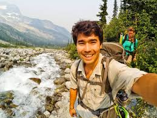
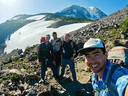
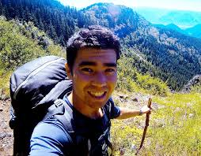
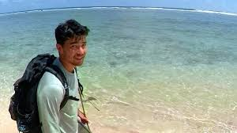
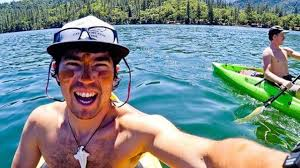

19th-Century British Contacts and Effects
1771
European knowledge of the Sentinelese began in the late 1700s-1800s as the British
explored the Andamans. In 1771, a British surveyor named John Ritchie sailed past
the island. He wrote in his journal that he saw many lights on the island while he was
aboard an East India Company exploration ship. Ritchie never visited the island in person.
However, he is one of the first known people to testify about seeing it.
1867
Nearly 100 years later, another Briton named Jeremiah Homfray sailed to North Sentinel
Island. He was searching for prisoners who had fled the nearby Andaman Islands. When Homfray
and his crew approached the shore, they saw a group of Sentinelese people fishing with bows
and arrows, rather than fishing poles. Due to the perceived aggressive attitude of the
Sentinelese people, Homfray and his crew chose not to disembark from their ship. In the same
year, an Indian merchant ship called the Ninevah crashed on the shore of North Sentinel Island.
Three days after the crash, the ship's 86 passengers and 20 crew members were attacked by the
Sentinelese (although they had seen them approaching before the attack). Fearing for their lives,
the captain and some of the crew left in a lifeboat and were later rescued by a passing ship.
Another ship was sent later to rescue the remaining crew, who had used sticks and stones to
defend themselves against the Sentinelese.
1880
In 1880, a 20-year-old explorer named Maurice Vidal Portman landed on the island. While there,
he discovered a series of paths and abandoned villages. He also observed the Sentinelese people
and compared them to the Onges, another tribe from a nearby island. During Portman's visit, he
kidnapped four children and an elderly couple, taking them to the nearby Andaman Islands. The
six Sentinelese people fell sick almost immediately. When the elders died, Portman decided to
send the children back to North Sentinel Island (along with gifts for the island's people).
Despite his crimes, Portman still visited the Sentinelese multiple times between 1885 and 1887.
In his records, he said that he feared the Sentinelese people's extinction because of their
refusal to engage with foreigners. Despite his actions, Portman still visited the Sentinelese
multiple times between 1885 and 1887. In his records, he expressed concern about the potential
extinction of the Sentinelese people due to their refusal to engage with foreigners.
1896
In 1896, a Hindu prisoner fled the British penal settlement on Great Andaman Island in a
makeshift raft and washed ashore on North Sentinel Island. A search party found his body days
later “pierced in several places by arrows and with its throat cut”. Contemporary accounts noted
that the Sentinelese did not welcome him; the escapee's corpse was discovered with no Sentinelese
observed nearby. This incident marks the earliest recorded modern encounter and underscores the
tribe's fierce isolation.
Indian Government Contact Efforts (1960s-1990s)
1947-1966
After India's independence in 1947, the North Sentinel Island fell under Indian sovereignty.
Rather than force contact, the government enacted protective policies. In 1956 it designated
Sentinel Island a tribal reserve, legally prohibiting travel within 5 km to prevent disturbance.
Officials recognized that leaving the Sentinelese alone was crucial both for their survival and
to avoid exploitation of the island. In 1970, to formalize sovereignty, a government survey party
quietly landed and erected a stone plaque declaring North Sentinel part of India. Beyond that,
Indian administrations largely maintained a “hands-off” stance, intervening only during emergencies.
1967
In January 1967, Indian anthropologist T. N. Pandit led the first professional expedition to North
Sentinel Island. His team of about 20 (including administrators, naval personnel and police) landed
and cautiously approached. They spotted footprints and tracked them inland about 1 km to an open
clearing containing 18 occupied huts with still-burning fires, fresh fish, wild fruits, and implements
like bows, arrows, spears, baskets, and pots. No Sentinelese appeared; they likely retreated into the
forest to observe. After spending an hour on shore, the team left gifts (coconuts, metal utensils,
tools) on the beach and withdrew. The policemen accompanying Pandit collected a few Sentinelese
artifacts (bows, arrows, etc.) as trophies. This visit confirmed the tribe's self-sufficiency (even
practicing metalworking) and set a template of gift-giving without forcing face-to-face contact.
1974
In early 1974, a National Geographic film crew (with anthropologists including Pandit and armed police)
returned to Sentinel Island to shoot a documentary Man in Search of Man. As the boat approached, the
Sentinelese launched a barrage of arrows. Police in body armor briefly went ashore to leave gifts—a toy
car, coconuts, a live pig and doll—on the beach, then retreated under fire. One arrow struck and wounded
the film director in the thigh. The visitors withdrew, and the tribe later calmly retrieved the offerings:
they buried the pig and doll as food and took the coconuts and cookware. This expedition also resulted in
the first published photograph of a Sentinelese (by Raghubir Singh for National Geographic). Later in 1974
an Indian team tried a novel approach: they brought Onge tribesmen (linguistically related Andaman
Islanders) to Sentinel's shores in hopes of communication. This attempt failed; the Sentinelese grew even
more hostile at seeing the outsiders' kin. According to Pandit's later account, when two Onge men were
brought in 1991 (misremembered by some as 1974), the Sentinelese reacted with anger and aggression. In
summary, the 1970s contacts showed that the tribe consistently repelled intruders: they accepted gifts from
a distance but fiercely resisted any encroachment.
1981
On 2 August 1981 the Singapore-registered cargo ship MV Primrose ran aground on a reef off North Sentinel
during a storm. Its 31 crew were stranded aboard. Over the next few days, a large group (over 50) of
Sentinelese men in canoes gathered. The captain radioed for help, warning of “wild island people with spears
and arrows” trying to board. Heavy seas prevented the islanders' canoes from reaching the ship, and the crew
stood guard on deck with axes and flares. After nearly a week, an Indian Navy/ONGC helicopter arrived and
evacuated the crew to safety. Following the evacuation, salvage crews arrived to dismantle the wreck. The
Sentinelese, left alone on the island, scavenged metal from the Primrose. They soon incorporated the iron
into their tools (arrows became metal-tipped). Local scrap dealers who worked on the wreck reported that
small friendly exchanges did occur: after offering bananas and spare scrap metal, they saw Sentinelese
canoeers regularly visiting the wreck site to collect metal pieces. This incident had a lasting impact:
remains of the Primrose still sit near the reef today, visible in satellite images.
1991 - First Peaceful Contact
After decades of hostility, 1991 saw India's first friendly contact with the Sentinelese. Pandit led routine
patrols carrying gifts, this time joined by a female anthropologist, Madhumala Chattopadhyay. On 4 January
1991, the Sentinelese surprisingly approached the landing party unarmed and took coconuts directly from the
visitors' hands. In a second visit that month, dozens of Sentinelese came down; one man even boarded the
research boat briefly to grab more coconuts before retreating. These peaceful exchanges (coconuts, cloth, or
pots handed over, and smiles or relaxed gestures in return) lasted several minutes, a first in recorded
history. Photographs and film were taken during these expeditions, but due to privacy, the Indian government
later restricted their release.
The 2004 Tsunami and 2006 Fishermen Killing
2004
The Indian Ocean earthquake and tsunami in December 2004 prompted authorities to check on North Sentinel.
Helicopters were sent to overfly the island for damage assessment. The Sentinelese, however, perceived
these aircraft as threats: they shot arrows at a surveying helicopter. Careful aerial counts afterward
found about 32 Sentinelese survivors scattered along the shore, with no evidence of casualties.
Geographically, the tsunami merged North Sentinel with nearby islets and exposed much coral reef (Shrinking
the tribe's fishing lagoons). Overall, the tribe proved resilient: they survived uncontacted despite the
natural disaster and continued to respond distrustfully to outsiders' presence.
2006
On 27 January 2006, two Indian fishermen (Sunder Raj and Pandit Tiwari) drifted close to North Sentinel
while illegally harvesting crabs. The Sentinelese attacked the stranded boat and killed both men with
axes. Reports say the bodies were displayed impaled on stakes facing the sea, perhaps as a warning. Three
days later, Indian authorities dispatched a Coast Guard helicopter to recover the bodies. When the
helicopter attempted to land, the Sentinelese confronted it by shooting arrows (and reportedly spears)
upward. The retrieval was aborted due to the threat. Only one body was eventually recovered when a
subsequent mission was allowed safely ashore. This incident underscored the tribe's determination to
defend their territory at any cost, and it reinforced India's policy of criminally prosecuting any
intruders (the incident was treated as murder by “unknown assailants” rather than confronting the tribe
directly).
2018 Death of John Allen Chau
Who was John Allen Chau?
John Allen Chau was born December 18, 1991, in Scottsboro, Alabama, and raised in Vancouver, Washington,
by a Chinese-American father who was a psychiatrist and an American mother who was a lawyer. He grew up
in a devout Assemblies-of-God household and attended Vancouver Christian High School, excelling in outdoor
activities and church ministry. Chau earned a B.Sc. in Exercise Science from Oral Roberts University in 2014.
During college and afterward he undertook numerous overseas mission trips to Mexico, South Africa, Israel
and Iraqi Kurdistan and adventure trips, documenting his explorations on a blog called “the Rugged Trail”.
He also participated in missionary training programs (e.g. “More Than a Game,” Royal Rangers, etc.) and
wilderness/EMT training. In late 2017 he joined All Nations, a Kansas City-based missionary training
organization, in preparation for reaching an “unengaged” people group. Notably, Chau had traveled to India's
Andaman Islands before, in 2015 and 2016 he took four trips to the Andaman islands, though he did not reach
North Sentinel on those trips. All Nations official biography confirms he joined them in 2017 after years of
intense preparation, including missions projects in Iraq, Kurdistan and South Africa.


Religious and Ideological Motivation
Chau was a committed evangelical Christian motivated by the Great Commission (Jesus' injunction to evangelize
all nations). He often wrote of feeling a divine calling to “bring Christ” to the Sentinelese. In his diary
he thanked God “for choosing me, before I was even yet formed in my mother's womb, to be Your messenger of
Your Good News”. He believed sharing the gospel justified extraordinary risk: friends recalled him saying
that following Jesus meant “we do not resist persecution, just as Jesus himself endured it.”. A fellow
trainee at All Nations noted Chau spoke of “his burden” to save the Sentinelese, “a sacred trust” he felt only
God could relieve. Chau idolized historical missionaries (e.g. David Livingstone, Bruce Olson) and quoted
martyrs like Jim Elliot. His own writings frequently invoke eternal salvation: in a note to family he wrote
that “the eternal lives of this tribe is at hand” and asked them “Do not retrieve my body… Don't be angry…
rather please live in obedience… I'll see you again when you pass through the veil.”. In summary, Chau saw
himself as a willing “martyr” for Christ, a stance he explicitly embraced. For example, after being shot by
the tribe he wrote, “If you want me to get actually shot, or even killed with an arrow then so be it… to you,
God, I give all the glory of whatever happens. I DON'T WANT to die.”. His faith also informed how he planned
the mission. He quarantined in Port Blair to protect the tribe from disease, and even prayed that God would
shield him from Indian authorities during the voyage.

Preparation and Planning
Chau spent ~11 days in a Port Blair safehouse around mid November, 2018, “quarantining” himself to avoid
transmitting illness. He obtained a standard tourist visa (the government had recently eased permit rules)
but was required by law to register with a Foreigners Regional Registration Office and gain special tribal
and environment clearances. He did none of this. Instead, Chau secretly contacted local Nicobari fishermen
from neighboring islands and hired them to take him to Sentinel Island. Indian police later confirmed he
bribed fishermen to take him near the island. His All Nations training included wilderness survival (e.g.
triage, EMT skills) and linguistic preparation (a short course at the Canadian Institute of Linguistics).
He packed carefully: police found Chau's notes and possessions on the fishermen's boat, including a small
waterproof case containing first-aid supplies (dressings, clotting agent, forceps to remove arrows),
vitamins, antibiotic creams, and even an abdominal pad and chest plate. He also brought gifts to win
goodwill: notebooks show he carried scissors, tweezers, fishing line and hook, rubber tubing, safety pins,
new towels, etc.. All Nations leader Dr. Mary Ho said Chau had received 13 immunizations (a claim
tribal-rights activists say is insufficient, since no vaccine protects against common colds). He did
extensive mental and spiritual preparation, reading missionary biographies (he kept the wives of Adoniram
Judson on hand) and praying for protection and boldness. In his journal he wrote vivid imagery of the
mission as spiritual warfare (e.g. calling Sentinel Island “Satan's last stronghold”). However, Chau was
fully aware the mission was illegal. Indian law (the Andaman & Nicobar Islands Protection of Aboriginal
Tribes Regulation, 1956) makes North Sentinel a “tribal reserve” where any outside contact without
government clearance is banned. (Even after India relaxed a general travel permit, ministers warned that
Sentinel Island remained off-limits and “no question of tourism” was allowed.) Nonetheless Chau proceeded,
knowingly flouting restrictions by working with unlicensed guides.


The Mission and Aftermath
November 14, Port Blair
Chau arrived in Port Blair and sheltered in a safehouse during a cyclone. He met two Nicobari fishermen
(Christian and Jason) and arranged to depart at night. In his diary he noted he “spent 11 days quarantining”
and read missionary memoirs.
November 15, late night/early AM
About 2 AM, Chau and the fishermen left Hut Bay (Little Andaman) by boat. By ~4:30 AM they anchored off North
Sentinel Island's southern reef. Chau then waded out with gear: he offloaded a kayak and supplies and noted
seeing a Sentinelese hut across the beach.
November 15, 10:00 AM
Chau paddled in his kayak about 400 yards toward the shore, carrying dead fish and gifts. Two Sentinelese men
ran out shouting and holding bows. Chau yelled in English “My name is John, I love you and Jesus loves you”
and offered the fish. The tribesmen strung arrows but did not attack; Chau panicked, flung his gifts into the
water and rapidly retreated to the fishermen's boat. He later wrote, “Well, I've been shot by the Sentinelese”
a reference to a minor grazing wound (his journal notes “a slight scratch”).
November 15, 1:50 PM
That afternoon Chau tried again, borrowing a second kayak and returning toward the same cove with gifts. He
encountered five Sentinelese of varying ages, including children. He handed out fish and tools. A child then
fired an arrow into Chau's chest. The arrow pierced his waterproof Bible, lodging in the page of Isaiah. Chau
extracted the arrow with forceps (nearly losing the arrowhead) and swam ~1 mile back to the boat. The fishermen
treated his wound; Chau recorded feeling “strangely… scared. I don't want to die”.
November 15, Evening
The fishermen anchored nearby. Chau rested but wrote, “I'm scared… frustrated and uncertain… would it be wiser
to leave… Will try again tomorrow”. He composed a letter to his parents, telling them not to retrieve his body
if he died, and set a deadline: “Trying again tomorrow (11/16/18)”. He left gifts onshore (scissors, towels,
etc.) at a cache he had made.
November 16, Pre Dawn
Chau embarked on a final attempt alone. No human-made record remains of this trip. He never returned. According
to the fishermen's later account, Sentinelese warriors shot him dead as he came ashore.
November 17
The boatmen, unable to find Chau at the rendezvous point, returned to Port Blair and reported him missing. The
fishermen told police they had seen the tribe dragging a body on the beach and burying it under leaves and sand.
(This timeline aligns with police statements that Chau was likely killed on Nov 16.) Indian Coast Guard and
police launched aerial/sea reconnaissance of the island but did not land (to avoid contact). Investigators
briefly brought along one fisherman who pinpointed where Chau's body was interred. They recovered Chau's
handwritten journals (13 pages) and personal effects from the fishermen's boat.
Death and Aftermath
Chau's death became known when the fishermen returned to Port Blair and reported him missing on Nov 17. Police
took custody of the five fishermen and two others who helped organize the trip on Nov 20. They charged them
with “culpable homicide, endangering human life, conveying a person for hire in an unsafe vessel” and violations
of laws protecting tribal peoples. The men were detained for months, by late Dec 2018 they were granted bail
pending trial. Indian church leaders (and even Chau's family) publicly appealed for leniency, noting the fishermen
believed they were simply carrying a paying passenger. Ultimately, the Indian government decided not to retrieve
Chau's body or prosecute the Sentinelese, authorities deemed it too risky and respectful of tribal isolation. An
anthropologist on the case stated they would “not continue trying” to contact North Sentinel Island, and officials
acknowledged the islanders were legally protected as a “tribal reserve”.
Indian police have said Chau's recovered notes show he “knew he would be shot” and tried to prepare (hence the
first-aid gear), but “his judgement was totally wrong” about surviving attack. By February 2019 the US State
Department publicly affirmed it would not pursue any action against the tribe, calling it a “tragic situation” and
noting that jurisdiction fell to India. Chau's family also issued a statement urging compassion and noting John's
love for the Sentinelese. No Sentinelese have ever been charged with any crime, consistent with Indian policy of
non-interference. The focus remained on the legality of the fishermen's actions under the Andaman & Nicobar Protection
of Aboriginal Tribes Regulation, 1956, which bars unauthorized entry into tribal reserves.
Legal and Political Reactions
Indian authorities repeatedly affirmed that North Sentinel Island is off-limits by law. In Parliament, a minister noted
the entire island is a “Tribal Reserve” under the 1956 Act. Officials emphasized that recent easing of tourist permits
did not change this status: under any regime foreigners still need explicit permissions to enter tribal areas. Andaman
police spokespersons said Chau had not obtained required clearances (Foreigners registration or tribal/environmental
approvals). The five fishermen were charged under multiple Indian laws. After their arrest the Evangelical Fellowship
of India and some local pastors argued they should not bear criminal blame, since Chau knowingly defied the rules.
In the US, the State Department (spokesman Brownback) made clear the US would not seek justice against the Sentinelese:
“We have not asked or pursued any sort of sanctions that the Indian Government would do against the tribal people”. US
diplomats worked with Indian counterparts via All Nations to ensure fair treatment of the detained fishermen. All
Nations press release (Nov 22, 2018) said it was “cooperating fully with all international, national and regional
officials”. In Congress and the press, some lawmakers expressed regret and urged India to ensure the fishermen's due
process, but no formal complaints were filed. Chau's US relatives mostly appealed for the fishermen's release rather
than retribution on the tribe.
Anthropological and Ethical Perspectives
Many experts and rights groups condemned Chau's expedition as ethically irresponsible. Survival International and
anthropologists warned that any outsider contact almost certainly endangers uncontacted tribes via disease and cultural
disruption. Survival's director Stephen Corry called missionary claims of safety “extraordinary ignorance” and cited
historical examples (FUNAI's failed 1970s contacts, the Nahua of Peru who lost half their population after contact) to
emphasize that even medical teams often cannot prevent epidemics. Harvard anthropologist Sita Venkateswar noted
analogous cases: after limited contact, India's Jarawa tribe now suffers high rates of alcoholism, exploitation, and
disease. TIME magazine likewise underscored that isolated tribes have chosen seclusion to avoid “catastrophic violence
and disease,” and that forcible contact is “extreme violence” threatening their survival. Ethicists also debated the
morality of missionary work. Some acknowledged Chau's sincerity but questioned cultural hubris: a Native American
Christian leader said, “I was once like John… But conversion can involve erasing part of a person's cultural identity”.
Others noted historical context: evangelist Ed Stetzer observed that “conversionary Protestantism is offensive to many”
given its colonial legacy. Biola scholar Kenneth Nehrbass asked whether breaking a country's law for evangelism is
justified: “When a government like India says, No foreigners in this island, is this just?”. In short, experts largely
agreed that Chau's act of deliberately contacting North Sentinel was a reckless violation of the tribe's autonomy with
potentially devastating consequences.
Media Coverage and Public Reaction
Chau's story dominated global headlines and sparked heated debate. Secular media often portrayed him as a naive or
reckless figure: The Guardian summarized one viral tweet calling him “a dumb American who thought the tribals needed
Jesus”, and commenters on social platforms used words like “deluded” or “idiot” to describe him. Major outlets (e.g.
New York Times, BBC, CNN) ran editorials and reports questioning the ethics of his mission. Some criticized All Nations
for encouraging what they called “extreme Christianity”. Others in the Christian press portrayed Chau as a martyr. All
Nations leader Mary Ho released a statement mourning his “monumental loss” emphasizing that “throughout church history
the privilege of sharing the gospel has often involved great cost” and praying his “sacrificial efforts will bear
eternal fruit”. Many evangelicals on social media argued his motives were loving (one defender noted, “If you believe in
heaven and hell… what he did was the most loving thing anyone could do”). Religious magazines (e.g. Christianity Today,
The Gospel Coalition) featured extensive discussions on mission strategy.
Chau's death also brought renewed attention to uncontacted tribes. Humanitarian organizations like Survival International
used the moment to urge greater protections for isolated peoples and criticized any policy shifts that might tempt
adventurers. Anthropologists and public intellectuals invoked Chau's case when discussing colonialism and indigenous
rights. For example, TIME and other outlets ran features explaining why tribes like the Sentinelese must be left alone.
Overall, the incident became a flashpoint in debates over religious freedom, missionary ethics, and tribal sovereignty. It
highlighted the fragility of such tribes, the legacy of past missionary encounters, and the clash between evangelistic
zeal and respect for indigenous autonomy.